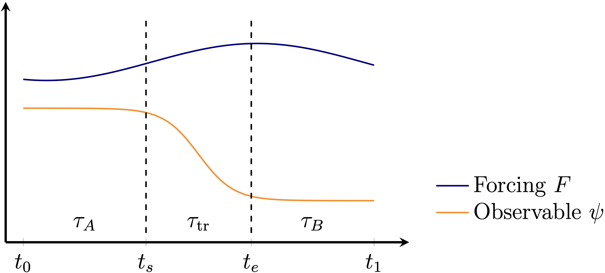

API

Figure: Problem setting. During the time interval $\tau = [t_0, t_1]$, is the system tipping in $\psi$ under the forcing $F$? From Börner & Dijkstra (2026).
Tipping test
The tipping_test method is the main function performing the tipping analysis for a given timeseries pair of an observable $\psi(t)$ and forcing $F(t)$.
TippingTest.tipping_test — Function
tipping_test(observable, forcing, time, t_tr; kwargs...)Runs the tipping analysis for a given observable timeseries and corresponding forcing timeseries.
The time argument specifies the set of time points at which the observable and forcing data are known (Note: both observable and forcing vectors must have the same length and refer to the same time points).
With the Tuple t_tr = (t_s, t_e), the user specifies the start (t_s) and end (t_e) times of the transition phase t_tr. This phase should contain the majority of the shift from regime A to regime B.
The linear null model is specified via the model keyword argument. This model is either used directly with the parameters set by the user (fit=false) or the model.params are fitted to the observable timeseries using the given weights (fit=true). Fitting is performed using the functionality of Optim.jl.
Keyword arguments
model: Instance of aLinearNullModelwith initial guess for its parametersp. The default isRelaxNullModel(observable[1], [1.0, 1.0]).init = [model.x0]: Initial condition for the null model at timet0.weights = [1,0,0]: Relative fitting weights applied to the time intervals[t_A, t_tr, t_B].fit = true: whether to optimize the parameters ofmodel(true) or usemodelas given (false).lower = nothing: Lower optimization bounds formodel.params. If nothing, unbounded optimization is used.upper = nothing: Upper optimization bounds formodel.params. Use together withlower.kwargs...: Additional keyword arguments forwarded toOptim.Options. If omitted,Optim.Options()uses its own defaults.
The tipping_test function returns a TippingTestResult:
TippingTest.TippingTestResult — Type
TippingTestResultOutput of the tipping_test method.
Fields
nullmodel: The fitted linear null modellinear_response: The response time series predicted by the linear null modelresidual: The nonlinear residual response, i.e. the component of the observable not explainable by linear responsestate_dependence: Time series of the derivative dR/dx, where R is the residual and x the linear responseforcing_dependence: Time series of the derivative dR/dF, where R is the residual and F the forcing
Null models
All null models are a subtype of the general LinearNullModel type.
As elementary null models, a linear damping model (RelaxNullModel) and the damped, driven harmonic oscillator (HarmonicOscillatorNullModel) are currently implemented.
TippingTest.LinearNullModel — Type
LinearNullModelAbstract supertype for a linear null model defined by a differential equation and a set of parameters.
TippingTest.RelaxNullModel — Type
RelaxNullModel <: LinearNullModelA simple linear dynamical system with inertia $m$ that responds to the forcing $F$ with sensitivity $\beta$, following the differential equation
\[m \dot y = -(x - x_0) + \beta F(t) .\]
Here $x_0$ is the reference state at $F=0$.
Fields
x0: Reference stateparams: Parameter vector[beta, m]
TippingTest.HarmonicOscillatorNullModel — Type
HarmonicOscillatorNullModel <: LinearNullModelA damped, driven harmonic oscillator that responds to forcing $F$ according to
\[\begin{aligned} \dot x &= v , \\ \dot v &= -\frac{1}{m^2}[(x - x_0 - \beta F(t)) - \gamma v] . \end{aligned}\]
Here $x_0$ is the reference state at $F=0$, $\beta$ is the forcing sensitivity, $m$ is the inertia, and $\gamma$ is the damping coefficient.
Fields
x0: Reference stateparams: Parameter vector[beta, m, gamma]
Fitting a null model
The parameters of a given LinearNullModel can be optimized in the tipping_test method by setting the keyword argument fit = true.
Alternatively, the fitting step can be performed independently using fit_nullmodel.
TippingTest.fit_nullmodel — Function
fit_nullmodel(observable, forcing, p_guess; kwargs...)Fits a LinearNullModel to the observable time series given a forcing time series.
Starting from a parameter guess p_guess, fitting is performed as a weighted least-squares fit using the Optim.jl package. Relative weights can be specified for the time intervals t_A (pre-transition phase), t_tr (transition phase) and t_B (post-transition phase) using the weights keyword argument. By default, weights=[1,0,0], so only t_A contributes to the fitting objective.
Returns the timeseries of the fitted null model and the optimal null model parameter vector.
Keyword arguments
model = RelaxNullModel: Subtype ofLinearNullModelused.time = 0.0:length(observable)-1: Time values forobservableandforcing.t_tr = (nothing, nothing): Tuple(t_s, t_e)containing the start (t_s) and end (t_e) time of the transition phaset_tr.x0 = observable[1]: Reference state of the null model.init = [observable[1]]: Initial condition used when simulating the null model.weights = [1, 0, 0]: Relative fitting weights for the time intervals[t_A, t_tr, t_B].upper = nothing: Upper parameter bounds. Used withlowerto enable bounded fitting.lower = nothing: Lower parameter bounds. When provided, bounded fitting is used; provideupperas well.kwargs...: Additional keyword arguments forwarded toOptim.Options. If omitted,Optim.Options()uses its own defaults.
Package dependencies
TippingTest.jl uses the CriticalTransitions.jl package, a subpackage of DynamicalSystems.jl, to solve the LinearNullModel in time. The null model is constructed as a CoupledODEs system and the forcing is applied using the RateSystem functionality.
Fitting the null model parameters is performed using the Optim.jl package with the default NelderMead solver. The function to minimize is simply the sum of squared distances between the observable and the null model solution over time, using the relative weights specified by the weights keyword argument.